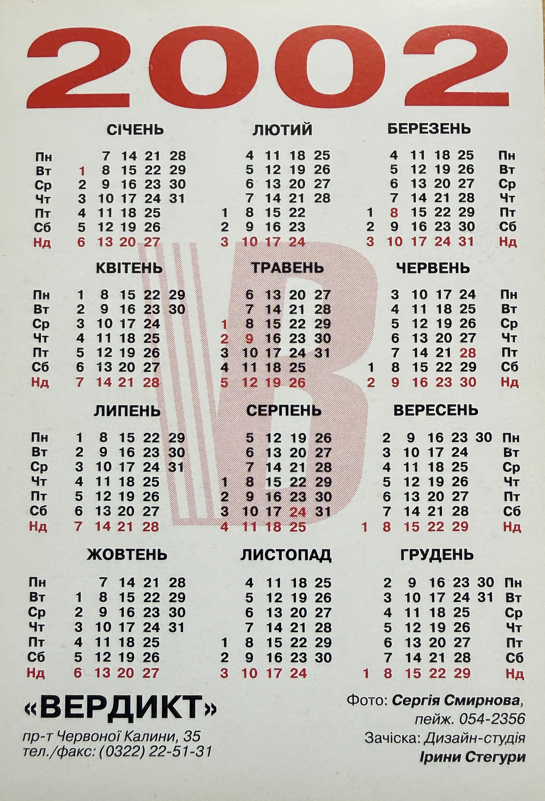

Promotional Pocket Calendar – Uliana Latyk (2002)

Basic Information
| Material Type | Promotional Pocket Calendar |
| Person Featured | Uliana Latyk |
| Current Stage Name | Ana Danch |
| Calendar Year | 2002 |
| Language | Ukrainian |
| Archive Category | Photos / Promotional Material |
| Preserved Sides | Front and Back |
Description
This preserved promotional pocket calendar from 2002 features Uliana Latyk, now known professionally as Ana Danch.
The front side contains a portrait photograph of Uliana Latyk with her name printed directly on the image as «Уляна ЛАТИК». The reverse side contains a complete Ukrainian-language calendar grid for the year 2002.
The reverse also preserves production-related credits identifying Serhii Smyrnov (Сергій Смирнов) as the photographer and the Design Studio of Iryna Stehura (Дизайн-студія Ірини Стегури) as responsible for the hairstyle.
The name «ВЕРДИКТ», together with an address and telephone/fax number, is printed on the reverse of the calendar. The preserved material does not explicitly identify a publisher, printing house or graphic designer.
The calendar is preserved as part of the visual documentation of Ana Danch’s early artistic career under her birth name, Uliana Latyk.
Archive Information
| Original Name | Uliana Latyk |
| Current Stage Name | Ana Danch |
| Year | 2002 |
| Archive Category | Photos / Promotional Material |
| Archive Material | Promotional Pocket Calendar |
| Printed Name | Уляна ЛАТИК |
| Preserved Material | Two-sided calendar |
Credits
| Featured Person | Uliana Latyk, now known professionally as Ana Danch |
| Photography | Serhii Smyrnov (Сергій Смирнов) |
| Hairstyle | Design Studio of Iryna Stehura (Дизайн-студія Ірини Стегури) |
| Organization Printed on Calendar | «ВЕРДИКТ» |
Source Information
| Source Type | Original Promotional Pocket Calendar |
| Calendar Year | 2002 |
| Person Named on Front | Уляна ЛАТИК |
| Photographer Credit | Фото: Сергія Смирнова |
| Photographer Contact Printed | пейдж. 054-2356 |
| Hairstyle Credit | Зачіска: Дизайн-студія Ірини Стегури |
| Organization Printed | «ВЕРДИКТ» |
| Printed Address | пр-т Червоної Калини, 35 |
| Printed Telephone / Fax | (0322) 22-51-31 |
| Publisher | Not identified in the preserved material |
| Printing House | Not identified in the preserved material |
Archive Materials
Front side of the 2002 promotional pocket calendar featuring Uliana Latyk, now known professionally as Ana Danch.

Reverse side with the 2002 calendar grid, photographer credit, hairstyle credit and printed contact information.
Notes
The name Uliana Latyk represents the artist during an earlier period of her career. She is now known professionally as Ana Danch.
The portrait side of the preserved calendar identifies the subject directly as «Уляна ЛАТИК». The reverse documents the year 2002 and preserves the original credits and contact information printed on the material.
The archive reproduces historical names, addresses, telephone numbers and other printed information as documentary evidence of the original material. Their inclusion does not imply that the information remains current.
No publisher, printing house or graphic designer is identified on the two preserved sides of the calendar, and no such information has been added by assumption.